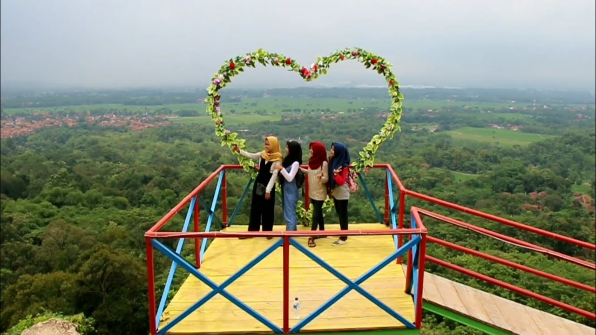
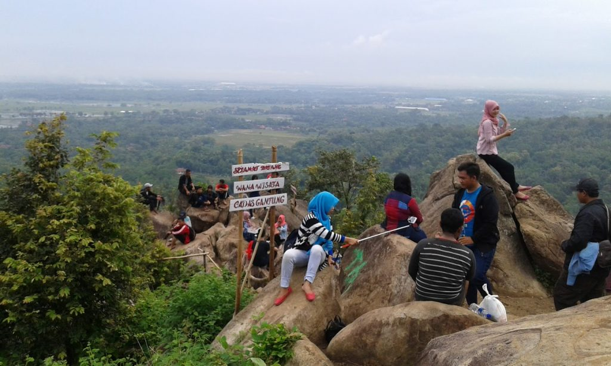

Admin — 05 Maret 2020 Add Comment
Cadas Gantung adalah objek wisata yang menjadi pesaing Pesona Tebing Keraton di Bandung. Lokasinya di perbukitan yang memiliki ketinggian 500-750 mdpl. Wisata alam ini mulai terkenal di pertengahan tahun 2015 lalu. Namun karena pemilik akun Gelo Petualang meng-upload foto-foto keren dari Cadas Gantung, objek wisata ini semakin viral di sosial media.
Objek wisata yang ada di puncak bukit ini tidak mudah dicapai. Tak heran jika tidak banyak orang yang mengunjunginya, sebab untuk mencapai Cadas Gantung sendiri butuh usaha keras. Namun, sepanjang perjalanan pengunjung akan disuguhi pemandangan indah dan menyejukkan mata seperti persawahan terasiring. Dan ketika sampai lokasi, keindahan yang ditonjolkan lebih dan lebih lagi, membuat pengunjung semakin kagum dan tidak menyesal berkunjung ke sana.

Lokasi Cadas Gantung Mirat
Cadas Gantung berlokasi di Desa Mirat Leuwimunding, Majalengka, Jawa Barat, tepatnya di kaki Gunung Sanghiangdora. Lokasinya berada dekat dengan Curug Gantung, Majalengka. Desa Mirat Leuwimunding memiliki jalur yang cukup baik dan berjarak 30 km dari Majalengka (perjalanan sekitar 60 menit). Namun, pengunjung akan menemukan kesulitan saat melakukan perjalanan dari Desa Mirat ke Cadas Gantung karena jalurnya yang sangat ekstrim.
Cadas Gantung adalah objek wisata yang menjadi pesaing Pesona Tebing Keraton di Bandung. Lokasinya di perbukitan yang memiliki ketinggian 500-750 mdpl. Wisata alam ini mulai terkenal di pertengahan tahun 2015 lalu. Namun karena pemilik akun Gelo Petualang meng-upload foto-foto keren dari Cadas Gantung, objek wisata ini semakin viral di sosial media.
Objek wisata yang ada di puncak bukit ini tidak mudah dicapai. Tak heran jika tidak banyak orang yang mengunjunginya, sebab untuk mencapai Cadas Gantung sendiri butuh usaha keras. Namun, sepanjang perjalanan pengunjung akan disuguhi pemandangan indah dan menyejukkan mata seperti persawahan terasiring. Dan ketika sampai lokasi, keindahan yang ditonjolkan lebih dan lebih lagi, membuat pengunjung semakin kagum dan tidak menyesal berkunjung ke sana.

Lokasi Cadas Gantung Mirat
Cadas Gantung berlokasi di Desa Mirat Leuwimunding, Majalengka, Jawa Barat, tepatnya di kaki Gunung Sanghiangdora. Lokasinya berada dekat dengan Curug Gantung, Majalengka. Desa Mirat Leuwimunding memiliki jalur yang cukup baik dan berjarak 30 km dari Majalengka (perjalanan sekitar 60 menit). Namun, pengunjung akan menemukan kesulitan saat melakukan perjalanan dari Desa Mirat ke Cadas Gantung karena jalurnya yang sangat ekstrim.
Yang mengejutkan, tebing Cadas Gantung ini ternyata memiliki bukit perkemahan. Bisa untuk dipakai berkemah 3-4 tenda. Lokasinya juga landai, karena dulunya merupakan lahan pertanian dengan luas 5 hektar. Posisinya yang sangat strategis membuat pengunjung bebas meng-explore daerah wisata sekitar Cadas Gantung.
Pelajar yang berkemah di situ, bisa mempelajari keanekaragaman flora seperti pohon jati, pinus dan kemiri. Tidak cukup sampai disitu, pengunjung juga bisa mendatangi Cilarangan, yaitu tebing batu yang biasa digunakan untuk rapelling dan climbing. Di salah satu sudutnya, terdapat air mengalir yang cukup deras. Pengunjung biasa menyebutnya, ‘air yang keluar dari batu besar’.
Kekurangan Cadas Gantung
Kekurangan yang dimiliki Cadas Gantung adalah lokasinya yang tak mudah dicapai, membuat pengunjung harus bersusah payah untuk menjangkaunya. Sebab, jalanan menuju lokasi sangat curam, menanjak serta berkelok-kelok. Kemudian, infrastruktur yang ada juga masih minim.
Jadi, hanya pengunjung yang memiliki keberanian dan mau berusaha keras lah yang bisa mencapai puncak. Padahal sebenarnya Cadas Gantung di Leuwimanding, Majalengka memiliki potensi wisata yang perlu di-explore, lho. Walaupun, tenaga dan keringat pengunjung dikuras hebat, toh akan terbayar dengan panorama alam yang disuguhkannya.
Fasilitas yang ada di Cadas Gantung juga belum lengkap, seperti tidak adanya gazebo untuk beristirahat, toilet, mushola dan registrasi serta tiket. Namun, terdapat rumah-rumah makan di jalur trekking yang cukup membantu pengunjung untuk membeli makanan atau minuman, beristirahat dan sebagainya. Di warung makan tersebut sudah disediakan kantung-kantung sampah agar pengunjung tidak membuangnya sembarangan.
Tapi, di beberapa titik lokasi Cadas Gantung justru belum disediakan tempat sampah, jadi pengunjung banyak yang membuangnya sembarangan. Selain itu yang paling penting adalah tidak adanya pembatas berupa pagar, tali atau tulisan yang membatasi tepian Cadas Gantung yang berbentuk melengkung bulat. Bila tidak ada perhatian khusus, bisa jadi objek wisata ini berpotensi membahayakan pengunjung.
Saat ini, organisasi pemuda dan perangkat desa setempat mulai menyadari potensi wisata yang dimiliki Cadas Gantung dan akan mengelolanya dengan menambah beberapa fasilitas, seperti lahan parkir, perbaikan jalan serta pemasangan petunjuk arah. Untuk ke depannya, fasilitas akan terus di tambah agar pengunjung yang datang semakin betah.